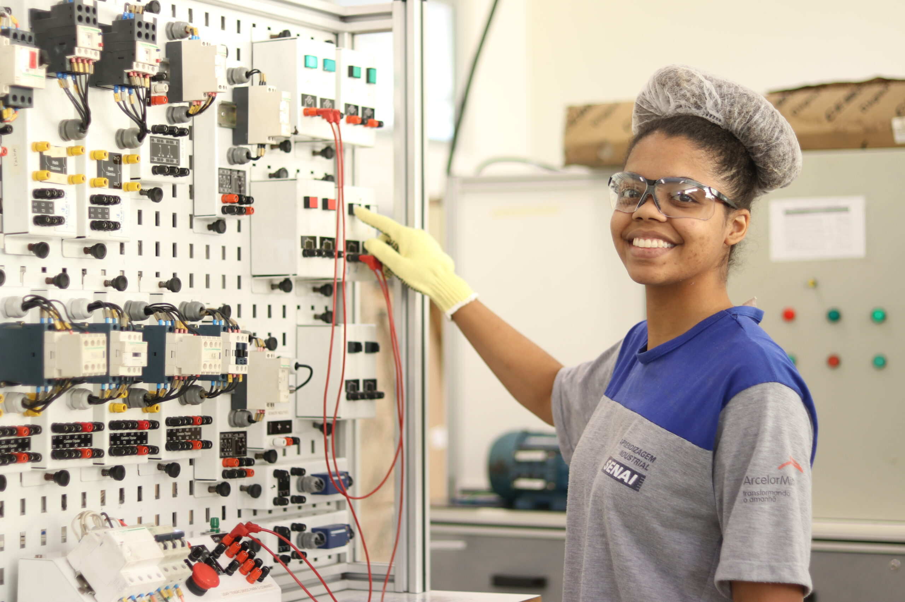

Bem-vindo ao SENAI - Sua Porta para o Futuro Profissional
No SENAI, acreditamos que a educação é o caminho para transformar vidas e construir um futuro promissor. Somos referência em ensino técnico e profissionalizante no Brasil, preparando milhares de alunos para os desafios do mercado de trabalho. Com mais de [insira número] anos de experiência, nossa missão é capacitar profissionais com o conhecimento e as habilidades que o setor industrial demanda, promovendo inovação, sustentabilidade e excelência.
Por que Escolher o SENAI?
- Excelência em Educação: Oferecemos cursos técnicos, tecnológicos e de qualificação profissional que são reconhecidos pela qualidade e alinhados às necessidades reais da indústria. Nosso currículo é constantemente atualizado para acompanhar as inovações tecnológicas e as novas demandas do mercado.
- Infraestrutura de Ponta: Nossas unidades contam com laboratórios modernos, oficinas bem equipadas e ambientes que simulam situações reais de trabalho. Aqui, você aprende na prática, utilizando equipamentos e tecnologias de última geração.
- Professores Qualificados: Nosso corpo docente é formado por profissionais altamente qualificados e com vasta experiência no setor industrial. Eles estão comprometidos em transmitir não apenas conhecimento, mas também a paixão pela profissão.
- Conexão com o Mercado: O SENAI mantém parcerias sólidas com indústrias e empresas de todo o Brasil, garantindo que nossos alunos tenham acesso a estágios, programas de aprendizagem e oportunidades de emprego ao concluir seus cursos.
- Foco na Inovação: Incentivamos a criatividade e a inovação em nossos alunos, proporcionando um ambiente propício ao desenvolvimento de novas ideias e soluções tecnológicas. Através de projetos e competições, nossos estudantes são desafiados a colocar em prática o que aprenderam em sala de aula.

Nossos Cursos
Oferecemos uma ampla gama de cursos para todas as etapas da sua carreira:
- Cursos Técnicos: Formação completa para quem deseja entrar rapidamente no mercado de trabalho com uma profissão valorizada.
- Cursos de Qualificação Profissional: Perfeito para quem quer se especializar em uma área específica ou adquirir novas competências.
- Cursos Superiores de Tecnologia: Ensino superior focado em tecnologia e inovação, com ênfase na aplicação prática do conhecimento.
- Pós-graduação e Extensão: Para profissionais que buscam atualização constante e especialização em áreas estratégicas.
Transforme Seu Futuro com o SENAI
Se você busca uma formação que une teoria e prática, com foco no mercado de trabalho e nas necessidades da indústria, o SENAI é o lugar certo para você. Explore nosso site, conheça nossos cursos e venha fazer parte de uma das instituições mais respeitadas do país. Prepare-se para o sucesso com uma educação de qualidade e uma formação que faz a diferença.